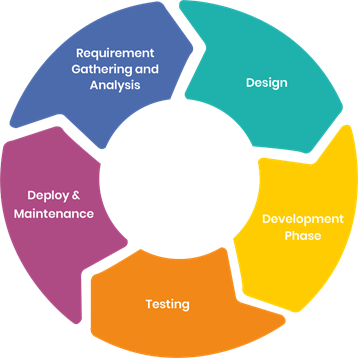
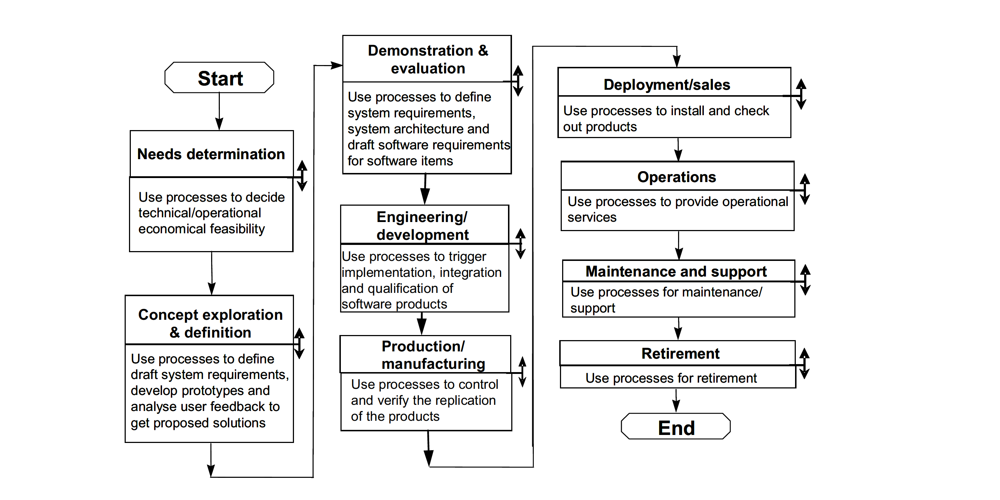

Learning outcomes
Learners ...
- understand what the goal of the analysis phase is
- understand why verification and validation means
- Have an understanding of a well formed requirement
Planning¶
Verification and validation¶
Two steps ensure quality the process of verification, which can be addressed through process verification This is what we have talked about in the session on registered reports, the verification is the process of where you verify that the process will lead to the desired outcome The second process is validation validation is the process of determining that you fulfill the need for the software. That is that the software fulfills and accomplices the needs put on it by stakeholder or user. To full fill the second part we must know what the User needs, called Needs determination, this is then expressed as requirements which if well formed can be tested the act of validation.
-- "What is verification" from ISO 9000:2015 3.8.12 verification confirmation, through the provision of objective evidence (3.8.3), that specified requirements (3.6.4) have been fulfilled Note 1 to entry: The objective evidence needed for a verification can be the result of an inspection (3.11.7) or of other forms of determination (3.11.1) such as performing alternative calculations or reviewing documents (3.8.5). Note 2 to entry: The activities carried out for verification are sometimes called a qualification process (3.4.1). Note 3 to entry: The word “verified” is used to designate the corresponding status. -- "what is validation" from ISO 9000:2015 3.8.13 validation confirmation, through the provision of objective evidence (3.8.3), that the requirements (3.6.4) for a specific intended use or application have been fulfilled
First Phase: Analysis¶

As you have heard the first phase in any software development is Analysis phase or Requirements phase or Inception phase (Swedish idiom "Kärt barn har många namn"-translation "Dearest child has many names") in this is the phase we are focusing on in this lecture. The goal of the analysis phase is to figure out what the program should do and what needs the program must meet. It like all other phases of modern software development is done in an iterative loop or spiral. In this early stage a focus is on Requirements sometimes also called needs determination and risk analysis. The First thing to remember and include in your analysis is the scope of your project both in time and scale so that you do not over commit both in choice of level of formalism and amount of features that you which to construct.
Requirements¶
Why do we need to specify requirements?
According to Merlin Dorfman (article reproduced in chapter 1 requirements engineering) the results from the software crisis in the 1960s gave rise to the following problem "In nearly every software project which fails to meet performance and cost goals,requirements inadequacies play a major and expensive role in project failure"
Richard Harwell et. al states "Each contract specialist, lawyer, engineer, systems engineer, manager, or anyone else involved in the transition Division into product, bas his or her own definition of a requirement, With the rare exception, all are applicable and meaningful"
-- "What is a Requirement?"
What guidance can we then gleen in what a Requirement is the above mentioned paper asses that "if it mandates that something must be accomplished, transformed, produced, or provided, it is a requirement"[R. Harwell et al, 1993]
-- "Why do we need a Software Requirements Specification(SRS) in Research software Bajraktari et al. 2024 argue that requirements engineering is necessary in research software to improve maintainability, reproducibility, and collaboration between researchers and developers. Furthermore, empirical studies of Software Requirement Specifications (SRS) have shown that academic environments play a significant role in evaluating and improving requirements engineering techniques.
!!! "Regulatory requirement!" A well formed SRS will be asked of you to full fill regulatory requirements especially if you work with AI , Sensitive data or medical software. Examples: -AI act , Development analysis of the AI act -Software as a Medical Device (SaMD)
According to ISO/IEC/IEEE 29148:2018 (Systems and software engineering — Life cycle processes — Requirements engineering) Defining requirements begins with stakeholder needs (or goals, or objectives) that are refined and evolve before arriving as valid stakeholder requirements.
What is a well formed Requirement" (ISO/IEC/IEEE 29148:2018)?
A well-formed specified requirement contains one or more of the following: — it shall be met or possessed by a system to solve a problem, achieve an objective or address a stakeholder concern; — it is qualified by measurable conditions; — it is bounded by constraints; — it defines the performance of the system when used by a specific stakeholder or the corresponding capability of the system but not a capability of the user, operator or other stakeholder; and — it can be verified (e.g., the realization of the requirement in the system can be demonstrated).
The generalize SDLC, from the IEEE Guide—Adoption of ISO/IEC TR 24748-1:2010 starts with needs analysis

Design process document
A Design process document is created when the process software design and or analysis needs to be specified to keep the development on track. It is created on organizational level to make sure that all project follow a similar documentation, and analysis and Design path. (If AI is heavily used in the Analysis and Design phase this document define when and how to use the AI tools and how to document its uses.)
Here is an example design process document:
When gathering requirements for the program the first iteration is based on analyzing the project brief for subjects and actions, i.e nouns and verbs that will describe the possible demands the users have on the system, after the first pass pay attention to adjective and adverbials that may change a need or requirement.
After this make a Table of requirements, from this a system use case design can begin. After the use cases have been determined, go through each use case and see how an object or action can solve this use case.
Design a object/class diagram to reflect this possibly through a collaborations diagram.
Example requirements specification
Here is an example of the needs part of the requirements specification:
| Requirement ID | Requirement Description | Acceptance Criteria | Test Cases |
|---|---|---|---|
| R1 | Visual Display | The program must display a field with particles and a visual cue to runtime settings | - Verify that the program opens a graphical window or interface for displaying particles. |
| R2 | Particle Initialization | Particles must be initialized with positions and speeds and constants relevant to the simulation such as gravity or energy potentials and parameters must be initialized | - Confirm that each particle has a unique position and speed. and that each parameter is set |
| R3 | Particle Interaction | Particles must interact with each other with at least pair wise interactions | - Implement a chosen interaction (e.g., gravitational attraction, Lennard-Jones potential, or direction alignment). - Verify that particles respond to each other's presence. |
| R4 | Boundary Condition | Choose a boundary condition for the field this includes how to handle interactions across borders | - Implement chosen boundary conditions (e.g., bounce, wrap, or elimination). - Confirm that particles behave according to the chosen boundary conditions. |
| R5 | Simulation Step | The simulation should progress in discrete steps | - Implement a mechanism to advance the simulation step by step |
| R6 | Real-time Visualization | Draw each simulation step with a suitable frame rate update | - Ensure that the simulation displays each step visually as it progresses. |
| R7 | Maximum Particle Limit | The simulation should handle a maximum number of particles set in the runtime settings | - Test the simulation with varying numbers of particles up to the maximum limit and verify that it remains stable. |
| R8 | Acceptable Framerate | The simulation should maintain an acceptable framerate even at maximum number of particles | - Measure and verify that the framerate remains above a defined threshold with the maximum number of particles. |
| R9 | Stop Simulation | Ability to stop the simulation through interruption of the current main loop | - Implement a user interface or mechanism to stop the simulation. and check that the simulation ends when such mechanisms are invoked |
| R10 | Restart simulation | A simulation should be able to restart without restarting the interface | Test that the implementation of the restart function can activate after the simulation has ended |
| R11 | Test-Driven Development | Develop the project using TDD | - Write test cases before implementing each feature or functionality. - Ensure that the tests pass after implementing the code |
Needs Gathering¶
Needs Gathering which is the first steps have many different names in the different software development models, usually named Use Cases or User Stories or something similar
graph LR
classDef actor fill:#f9f,stroke:#333,stroke-width:2px
classDef usecase fill:#ffc,stroke:#333,stroke-width:2px
A[Lecturer << Actor >>] -- Presents --> B((Present slides on UML))
C[Participant << Actor >>] -- Learns --> B
class A actor;
class B usecase;
class C actor;
graph LR
classDef actor fill:#f9f,stroke:#333,stroke-width:2px
classDef usecase fill:#ffc,stroke:#333,stroke-width:2px
A[Lecturer << Actor >>] -- Presents --> B((Present slides on UML))
C[Participant << Actor >>] -- Learns --> B
class A actor;
class B usecase;
class C actor;
Finding the needs!
Is a process of finding the subjects and verbs of the project brief and formalize them as testable statements, once that is done we do our first iteration of risk analysis on those sets.
Project brief
Using the information in Bergström et. al and the Data specified in the project. Do some analysis on data from an Uppsala weather station and present the result to the user in a structured manner.
[Bergström & Moberg, 2002] Bergström, Hans, and Anders Moberg. "Daily air temperature and pressure series for Uppsala (1722–1998)."
Climatic change 53.1 (2002): 213-252
PDF
Data
Where do you start?
- project brief, if you are given a project brief or write one your self the project brief should state the problem you would like to solve and any related ideas and constraints you have on the project. This is done in plain english
- Problem statement, the problem statement is a subset of the project brief as it only describes the problem you wish to solve.
Commonly used categories of requirements
- Requirement ID
- Requirement Description
- Acceptance Criteria
- Test Cases
- Risk
- Risk type
- Risk probability
- Risk severity
- Risk value(Probability x Severity)
Exercise¶
!!! info "Well formed requirements" Lets look at the examples for the Learners project and analyze if they conform to a well formed requirement, these requirements. The Goal of this exercise is to read through the page and learn what a wellformed requirment is, then look through and discuss the requirments. After this see if you can spot any system or functional requirment that needs expanding. Make a document about this in your learners folder called requirment_analysis_NN.md
Remember what makes a requirement well formed.
A well-formed specified requirement contains one or more of the following: — it shall be met or possessed by a system to solve a problem, achieve an objective or address a stakeholder concern; — it is qualified by measurable conditions; — it is bounded by constraints; — it defines the performance of the system when used by a specific stakeholder or the corresponding capability of the system but not a capability of the user, operator or other stakeholder; and — it can be verified (e.g., the realization of the requirement in the system can be demonstrated).
References¶
- AI act
- Batachare et. al 2024
- Development analysis of the AI act
- [ISO/IEC/IEEE 29148:2018]
- [ISO 9000:2015]
- [R. Harwell et al] R. Harwell et al. from Proc. 3,dAnn. lnt' I Symp. Nat'I Council Systems Eng., 1993, pp. 17-24.
Extra reading¶
Some extra material that are outside of what we use directly in the course compiled by Lars Eklund on different formal software development methodologies,SDLC and modelleling methods